![]()
### Load packages
library(pacman)
p_load(
tidyverse, # tidy data
FactoMineR, # compute principal component methods
factoextra, # extract, visualize and interpretate the results
corrplot # visualize cos2 of variables
)
### subset active individuals and active variables
data(decathlon2)
decathlon2_active <- decathlon2[1:23, 1:10]
head(decathlon2_active[, 1:6], 4)
## X100m Long.jump Shot.put High.jump X400m X110m.hurdle
## SEBRLE 11.04 7.58 14.83 2.07 49.81 14.69
## CLAY 10.76 7.40 14.26 1.86 49.37 14.05
## BERNARD 11.02 7.23 14.25 1.92 48.93 14.99
## YURKOV 11.34 7.09 15.19 2.10 50.42 15.31
### compute pca
res_pca <- PCA(decathlon2_active, graph = FALSE)
res_pca
## **Results for the Principal Component Analysis (PCA)**
## The analysis was performed on 23 individuals, described by 10 variables
## *The results are available in the following objects:
##
## name description
## 1 "$eig" "eigenvalues"
## 2 "$var" "results for the variables"
## 3 "$var$coord" "coord. for the variables"
## 4 "$var$cor" "correlations variables - dimensions"
## 5 "$var$cos2" "cos2 for the variables"
## 6 "$var$contrib" "contributions of the variables"
## 7 "$ind" "results for the individuals"
## 8 "$ind$coord" "coord. for the individuals"
## 9 "$ind$cos2" "cos2 for the individuals"
## 10 "$ind$contrib" "contributions of the individuals"
## 11 "$call" "summary statistics"
## 12 "$call$centre" "mean of the variables"
## 13 "$call$ecart.type" "standard error of the variables"
## 14 "$call$row.w" "weights for the individuals"
## 15 "$call$col.w" "weights for the variables"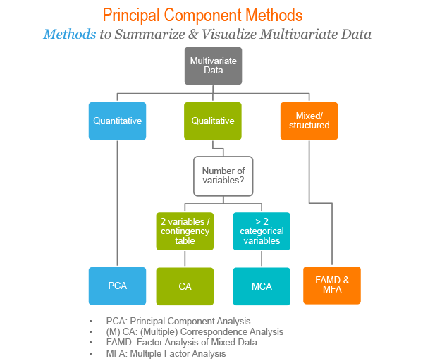
Principle component methods are used to summarize and viusalize the information contained in a large multivariate datasets.
Principle component analysis is used to extract the important information from a multivariate data table and to express this information as a set of few new variables called principle components. These new variables correspond to a linear combination of the originals. The number of principal components is less than or equal to the number of original variables.
PCA assumes that the directions with the largest variances are the most “important” (i.e, the most principal).
Technically speaking, the amount of variance retained by each principal component is measured by the so-called eigenvalue.
Note that, the PCA method is particularly useful when the variables within the data set are highly correlated. Correlation indicates that there is redundancy in the data. Due to this redundancy, PCA can be used to reduce the original variables into a smaller number of new variables ( = principal components) explaining most of the variance in the original variables.
Taken together, the main purpose of principal component analysis is to:
- identify hidden pattern in a data set,
- reduce the dimensionnality of the data by removing the noise and redundancy in the data,
- identify correlated variables
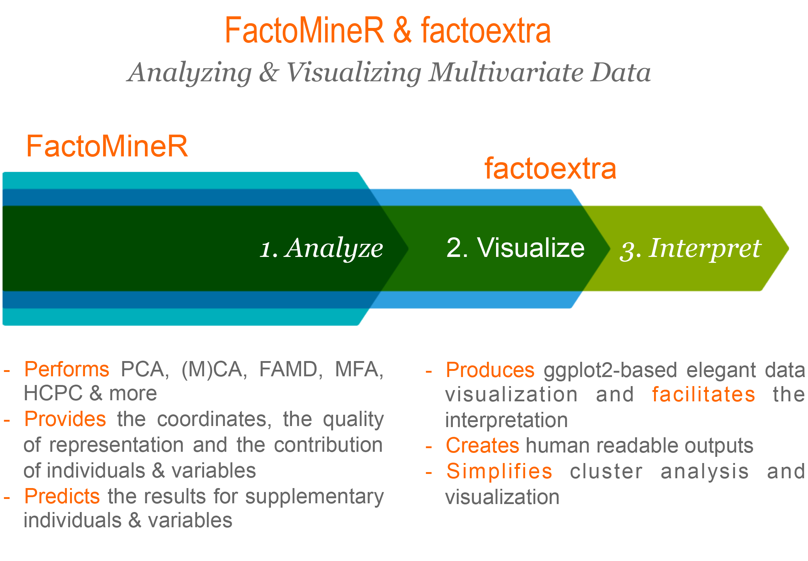
Compute PCA
Variances
### eigenvalues measure the amount of variation retained by each principal component
eig_val <- get_eigenvalue(res_pca)
eig_val
## eigenvalue variance.percent cumulative.variance.percent
## Dim.1 4.1242133 41.242133 41.24213
## Dim.2 1.8385309 18.385309 59.62744
## Dim.3 1.2391403 12.391403 72.01885
## Dim.4 0.8194402 8.194402 80.21325
## Dim.5 0.7015528 7.015528 87.22878
## Dim.6 0.4228828 4.228828 91.45760
## Dim.7 0.3025817 3.025817 94.48342
## Dim.8 0.2744700 2.744700 97.22812
## Dim.9 0.1552169 1.552169 98.78029
## Dim.10 0.1219710 1.219710 100.00000
### scree plot to visualize the eigenvalues
fviz_eig(res_pca, addlabels = TRUE, ylim = c(0, 50))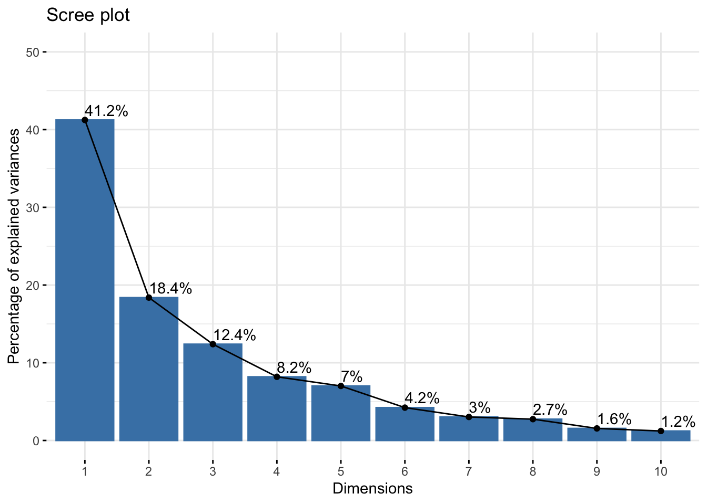
Variables
### graph of variables
var <- get_pca_var(res_pca)
var
## Principal Component Analysis Results for variables
## ===================================================
## Name Description
## 1 "$coord" "Coordinates for the variables"
## 2 "$cor" "Correlations between variables and dimensions"
## 3 "$cos2" "Cos2 for the variables"
## 4 "$contrib" "contributions of the variables"
### coordinates of variables to create a scatter plot
head(var$coord)
## Dim.1 Dim.2 Dim.3 Dim.4 Dim.5
## X100m -0.8506257 -0.17939806 0.3015564 0.03357320 -0.1944440
## Long.jump 0.7941806 0.28085695 -0.1905465 -0.11538956 0.2331567
## Shot.put 0.7339127 0.08540412 0.5175978 0.12846837 -0.2488129
## High.jump 0.6100840 -0.46521415 0.3300852 0.14455012 0.4027002
## X400m -0.7016034 0.29017826 0.2835329 0.43082552 0.1039085
## X110m.hurdle -0.7641252 -0.02474081 0.4488873 -0.01689589 0.2242200
### represents the quality of representation for variables on the factor map.
### It’s calculated as the squared coordinates: var.cos2 = var.coord * var.coord.
head(var$cos2)
## Dim.1 Dim.2 Dim.3 Dim.4 Dim.5
## X100m 0.7235641 0.0321836641 0.09093628 0.0011271597 0.03780845
## Long.jump 0.6307229 0.0788806285 0.03630798 0.0133147506 0.05436203
## Shot.put 0.5386279 0.0072938636 0.26790749 0.0165041211 0.06190783
## High.jump 0.3722025 0.2164242070 0.10895622 0.0208947375 0.16216747
## X400m 0.4922473 0.0842034209 0.08039091 0.1856106269 0.01079698
## X110m.hurdle 0.5838873 0.0006121077 0.20149984 0.0002854712 0.05027463
### contains the contributions (in percentage) of the variables to the principal components.
### The contribution of a variable (var) to a given principal component is (in percentage) : (var.cos2 * 100) / (total cos2 of the component).
head(var$contrib)
## Dim.1 Dim.2 Dim.3 Dim.4 Dim.5
## X100m 17.544293 1.7505098 7.338659 0.13755240 5.389252
## Long.jump 15.293168 4.2904162 2.930094 1.62485936 7.748815
## Shot.put 13.060137 0.3967224 21.620432 2.01407269 8.824401
## High.jump 9.024811 11.7715838 8.792888 2.54987951 23.115504
## X400m 11.935544 4.5799296 6.487636 22.65090599 1.539012
## X110m.hurdle 14.157544 0.0332933 16.261261 0.03483735 7.166193
### plot variables. it shows the relationship between all variables
fviz_pca_var(res_pca, col.var = "black")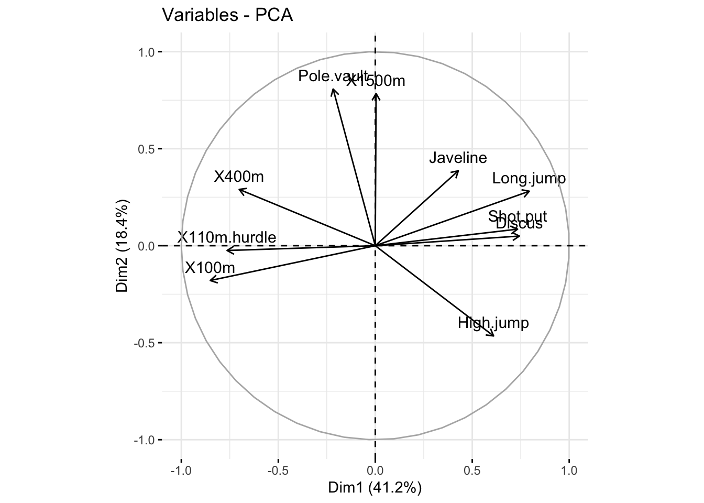
### quality of representation
head(var$cos2, 4)
## Dim.1 Dim.2 Dim.3 Dim.4 Dim.5
## X100m 0.7235641 0.032183664 0.09093628 0.00112716 0.03780845
## Long.jump 0.6307229 0.078880629 0.03630798 0.01331475 0.05436203
## Shot.put 0.5386279 0.007293864 0.26790749 0.01650412 0.06190783
## High.jump 0.3722025 0.216424207 0.10895622 0.02089474 0.16216747
corrplot(var$cos2, is.corr=FALSE)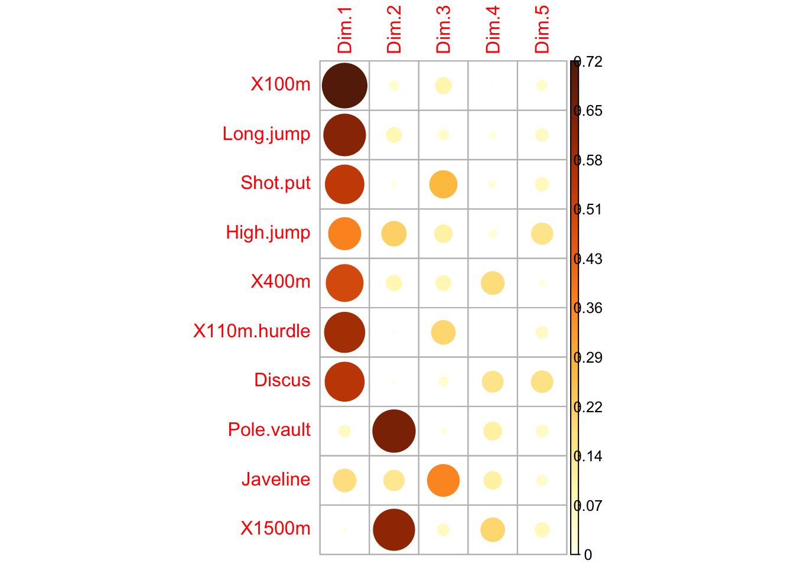
### bar plot total cos2 of variables on Dim.1 and Dim.2
fviz_cos2(res_pca, choice = "var", axes = 1:2)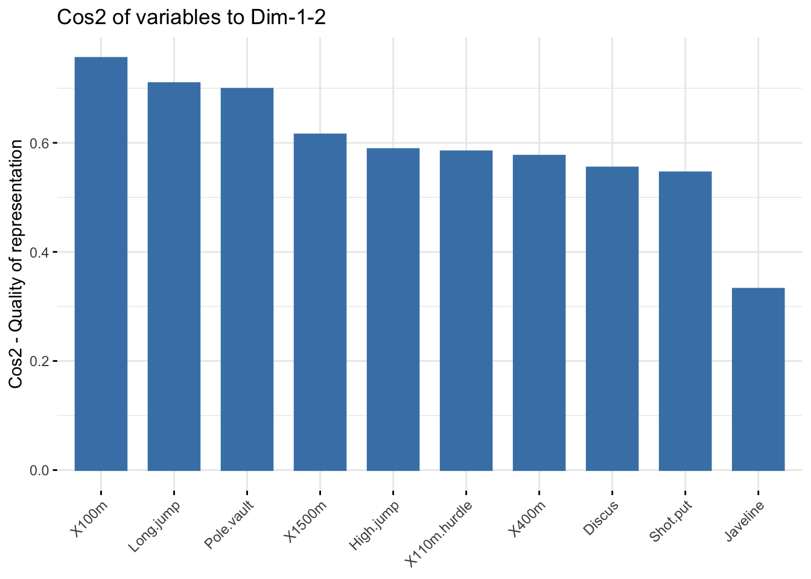
### Color by cos2 values: quality on the factor map
fviz_pca_var(
res_pca,
col.var = "cos2",
gradient.cols = c("#00AFBB", "#E7B800", "#FC4E07"),
repel = TRUE # Avoid text overlapping
)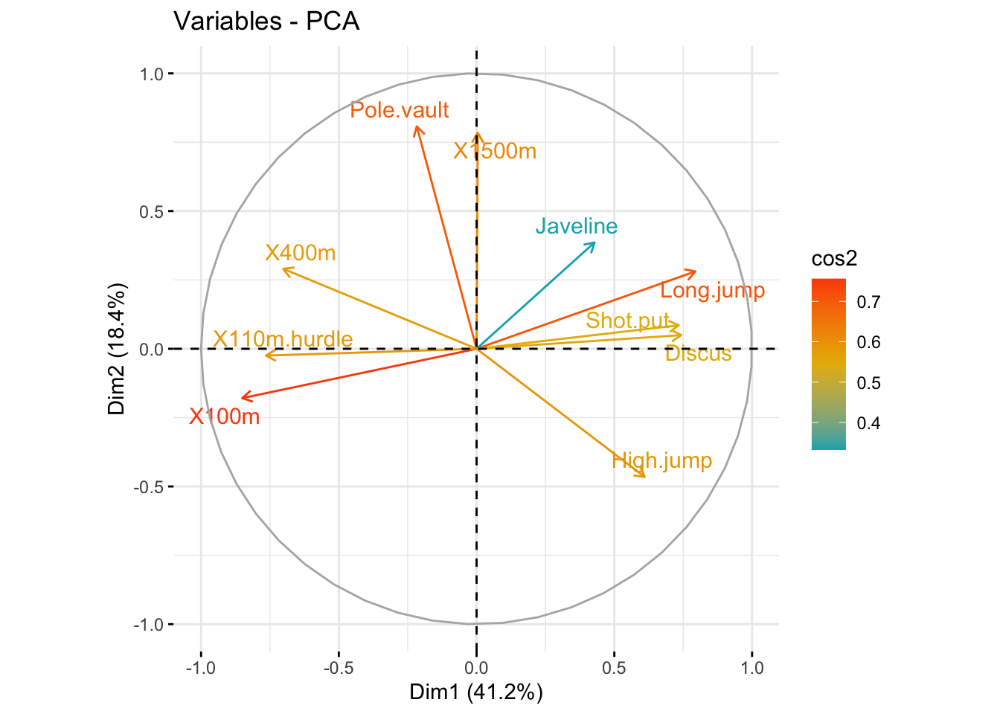
### Change the transparency by cos2 values
fviz_pca_var(res_pca, alpha.var = "cos2")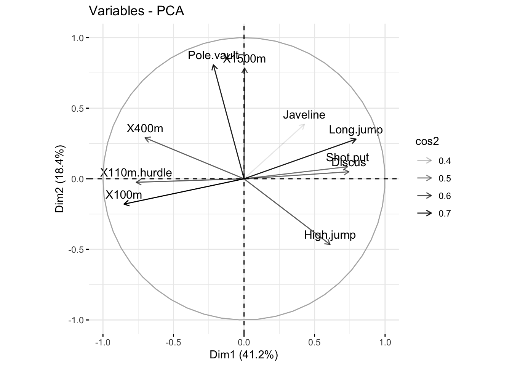
### contribution of variables to PCs
head(var$contrib, 4)
## Dim.1 Dim.2 Dim.3 Dim.4 Dim.5
## X100m 17.544293 1.7505098 7.338659 0.1375524 5.389252
## Long.jump 15.293168 4.2904162 2.930094 1.6248594 7.748815
## Shot.put 13.060137 0.3967224 21.620432 2.0140727 8.824401
## High.jump 9.024811 11.7715838 8.792888 2.5498795 23.115504
### highlight the most contributing variables for each dimension
corrplot(var$contrib, is.corr=FALSE)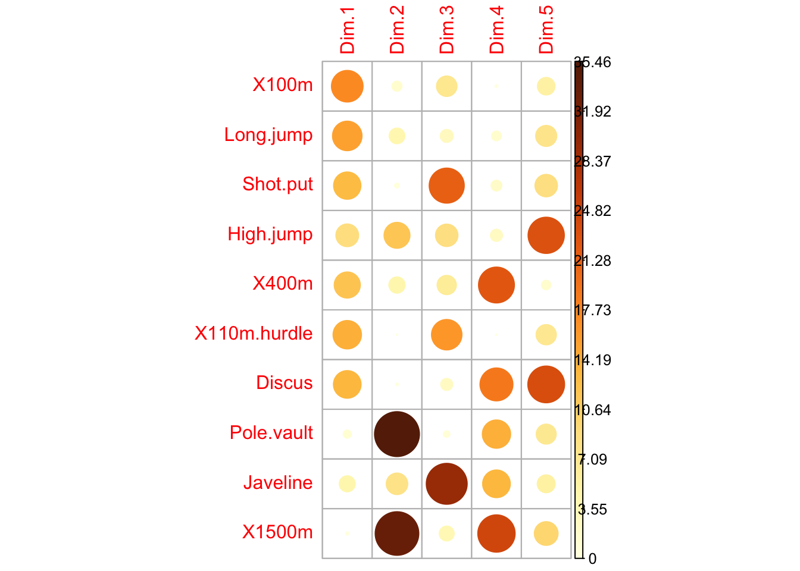
# Contributions of variables to PC1
fviz_contrib(res_pca, choice = "var", axes = 1, top = 10)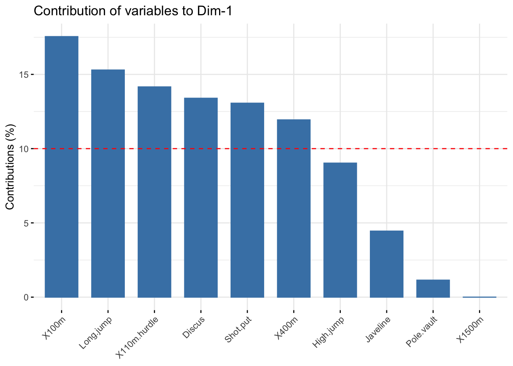
# Contributions of variables to PC2
fviz_contrib(res_pca, choice = "var", axes = 2, top = 10)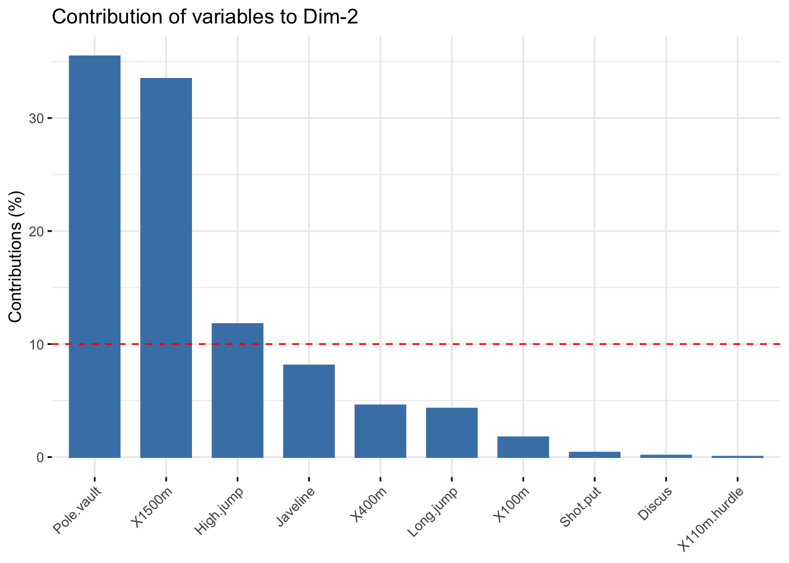
### total contribution to PC1 and PC2
fviz_contrib(res_pca, choice = "var", axes = 1:2, top = 10)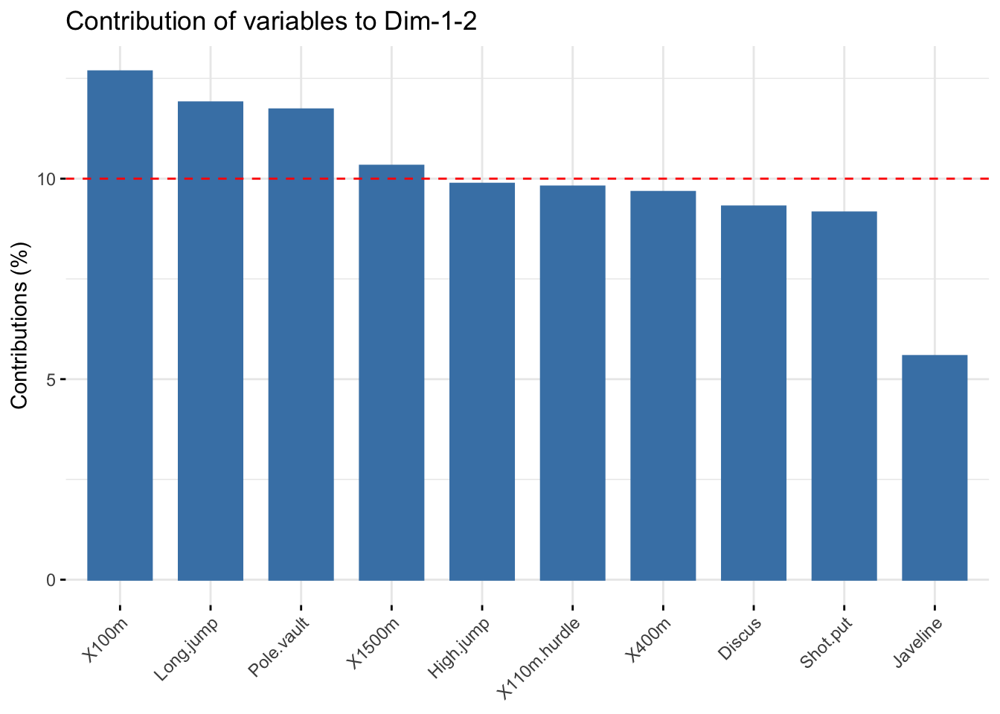
### highlight most important variables on the correlation plot
fviz_pca_var(
res_pca,
col.var = "contrib",
gradient.cols = c("#00AFBB", "#E7B800", "#FC4E07")
)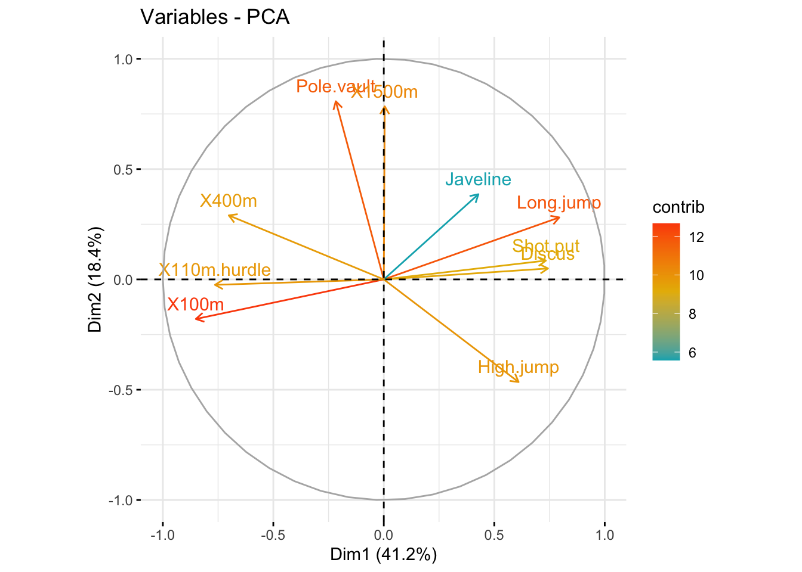
### Change the transparency by contrib values
fviz_pca_var(res_pca, alpha.var = "contrib")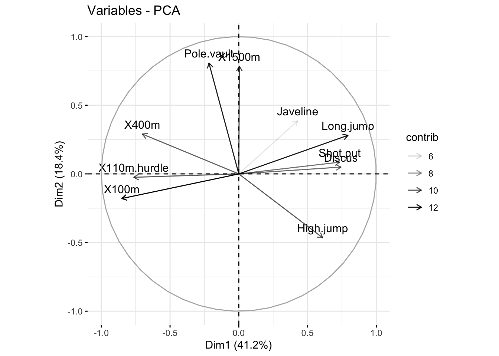
### color variables by custom continus variable
# Create a random continuous variable of length 10
set.seed(123)
my_cont_var <- rnorm(10)
### Color variables by the continuous variable
fviz_pca_var(
res_pca,
col.var = my_cont_var,
gradient.cols = c("blue", "yellow", "red"),
legend.title = "Cont.Var"
)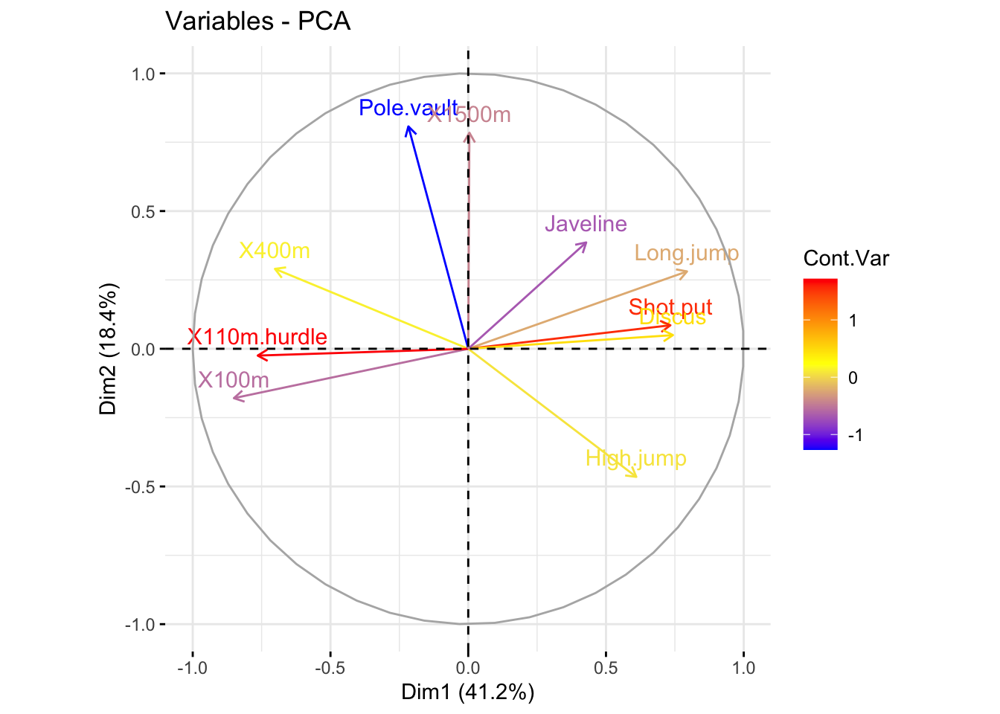
### color by groups, create a grouping variables using kmeans
set.seed(123)
res_km <- kmeans(var$coord, centers = 3, nstart = 25)
grp <- as.factor(res_km$cluster)
# Color variables by groups
fviz_pca_var(
res_pca,
col.var = grp,
palette = c("#0073C2FF", "#EFC000FF", "#868686FF"),
legend.title = "Cluster"
)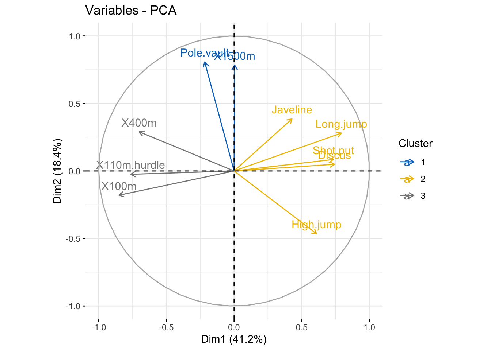
### dimension description
res_desc <- dimdesc(res_pca, axes = c(1,2), proba = 0.05)
# Description of dimension 1
res_desc$Dim.1
##
## Link between the variable and the continuous variables (R-square)
## =================================================================================
## correlation p.value
## Long.jump 0.7941806 6.059893e-06
## Discus 0.7432090 4.842563e-05
## Shot.put 0.7339127 6.723102e-05
## High.jump 0.6100840 1.993677e-03
## Javeline 0.4282266 4.149192e-02
## X400m -0.7016034 1.910387e-04
## X110m.hurdle -0.7641252 2.195812e-05
## X100m -0.8506257 2.727129e-07
# Description of dimension 2
res_desc$Dim.2
##
## Link between the variable and the continuous variables (R-square)
## =================================================================================
## correlation p.value
## Pole.vault 0.8074511 3.205016e-06
## X1500m 0.7844802 9.384747e-06
## High.jump -0.4652142 2.529390e-02Individuals
### extract results for individuals
ind <- get_pca_ind(res_pca)
ind
## Principal Component Analysis Results for individuals
## ===================================================
## Name Description
## 1 "$coord" "Coordinates for the individuals"
## 2 "$cos2" "Cos2 for the individuals"
## 3 "$contrib" "contributions of the individuals"
# Coordinates of individuals
head(ind$coord)
## Dim.1 Dim.2 Dim.3 Dim.4 Dim.5
## SEBRLE 0.1955047 1.5890567 0.6424912 0.08389652 1.16829387
## CLAY 0.8078795 2.4748137 -1.3873827 1.29838232 -0.82498206
## BERNARD -1.3591340 1.6480950 0.2005584 -1.96409420 0.08419345
## YURKOV -0.8889532 -0.4426067 2.5295843 0.71290837 0.40782264
## ZSIVOCZKY -0.1081216 -2.0688377 -1.3342591 -0.10152796 -0.20145217
## McMULLEN 0.1212195 -1.0139102 -0.8625170 1.34164291 1.62151286
### Quality of individuals
head(ind$cos2)
## Dim.1 Dim.2 Dim.3 Dim.4 Dim.5
## SEBRLE 0.007530179 0.49747323 0.081325232 0.001386688 0.2689026575
## CLAY 0.048701249 0.45701660 0.143628117 0.125791741 0.0507850580
## BERNARD 0.197199804 0.28996555 0.004294015 0.411819183 0.0007567259
## YURKOV 0.096109800 0.02382571 0.778230322 0.061812637 0.0202279796
## ZSIVOCZKY 0.001574385 0.57641944 0.239754152 0.001388216 0.0054654972
## McMULLEN 0.002175437 0.15219499 0.110137872 0.266486530 0.3892621478
### Contributions of individuals
head(ind$contrib)
## Dim.1 Dim.2 Dim.3 Dim.4 Dim.5
## SEBRLE 0.04029447 5.9714533 1.4483919 0.03734589 8.45894063
## CLAY 0.68805664 14.4839248 6.7537381 8.94458283 4.21794385
## BERNARD 1.94740183 6.4234107 0.1411345 20.46819433 0.04393073
## YURKOV 0.83308415 0.4632733 22.4517396 2.69663605 1.03075263
## ZSIVOCZKY 0.01232413 10.1217143 6.2464325 0.05469230 0.25151025
## McMULLEN 0.01549089 2.4310854 2.6102794 9.55055888 16.29493304
### quality and contribution
### individuals that are similar are grouped together on the plot
fviz_pca_ind(
res_pca,
col.ind = "cos2",
gradient.cols = c("#00AFBB", "#E7B800", "#FC4E07"),
repel = TRUE # Avoid text overlapping (slow if many points)
)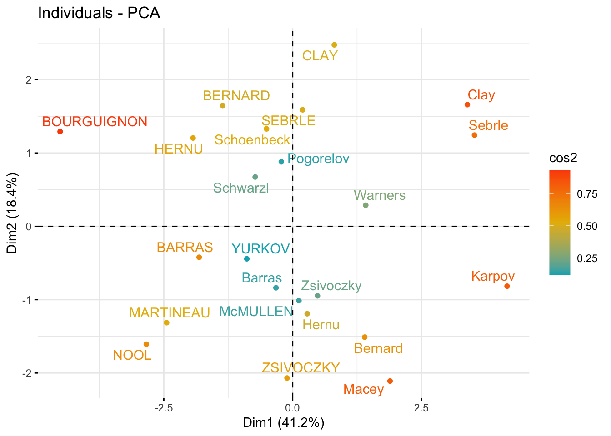
### change the point size according to the cos2 of corresponding individuals
fviz_pca_ind(
res_pca,
pointsize = "cos2",
pointshape = 21,
fill = "#E7B800",
repel = TRUE # Avoid text overlapping (slow if many points)
)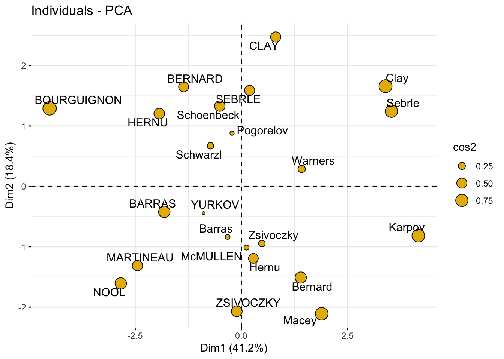
### change both point size and color by cos2
fviz_pca_ind(
res_pca,
col.ind = "cos2",
pointsize = "cos2",
gradient.cols = c("#00AFBB", "#E7B800", "#FC4E07"),
repel = TRUE # Avoid text overlapping (slow if many points)
)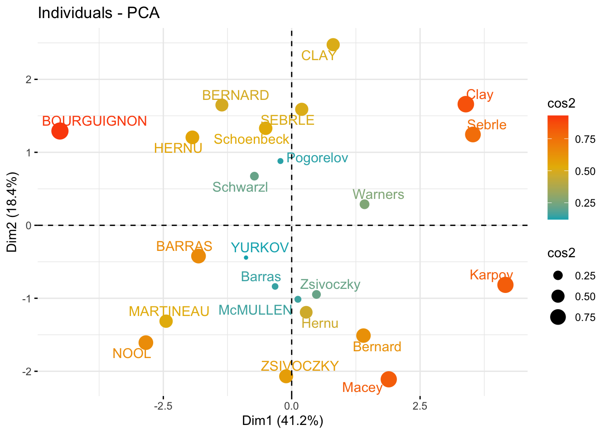
### total contribution on PC1 and PC2
fviz_contrib(res_pca, choice = "ind", axes = 1:2)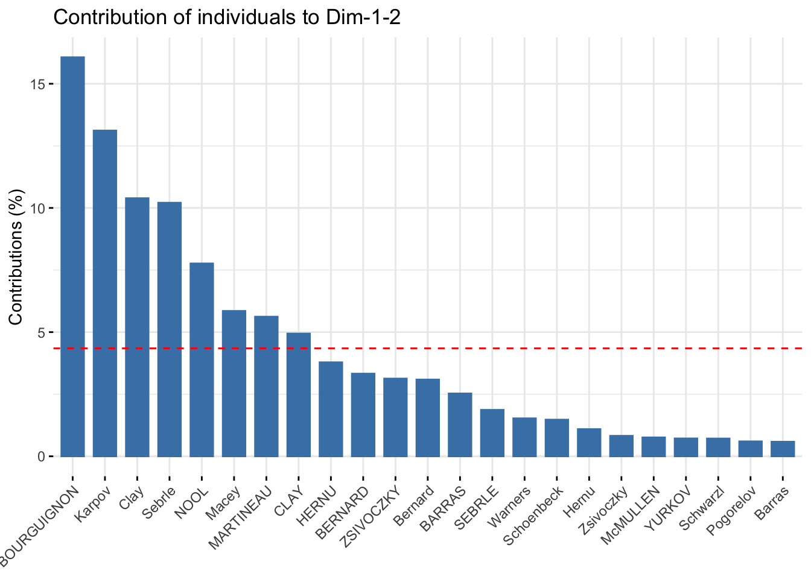
### color by custom continus variable
set.seed(123)
my_cont_var <- rnorm(23)
# Color individuals by the continuous variable
fviz_pca_ind(
res_pca,
col.ind = my_cont_var,
gradient.cols = c("blue", "yellow", "red"),
legend.title = "Cont.Var"
)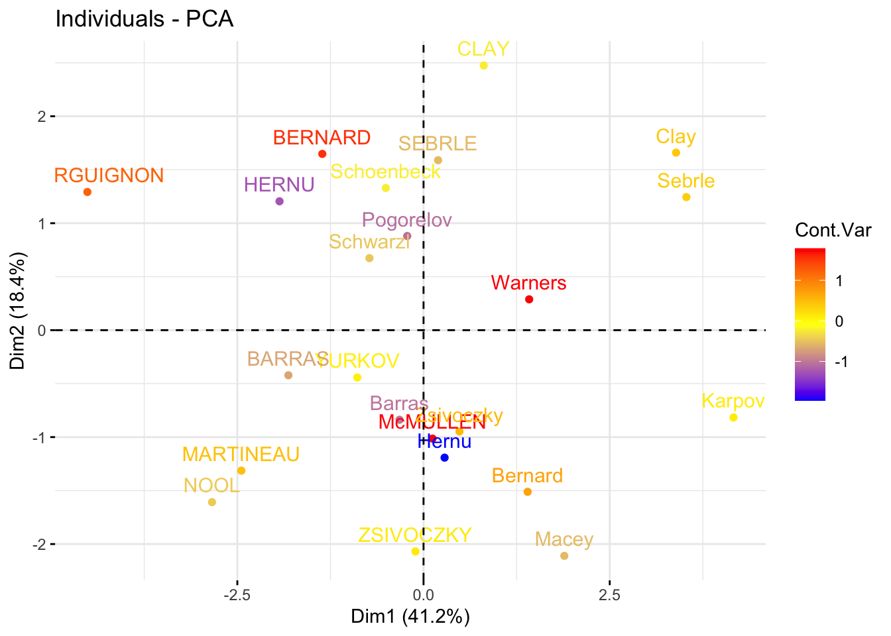
Other Dimensions
### visualize variables/individuals on dimension 2 and 3
# Variables on dimensions 2 and 3
fviz_pca_var(res_pca, axes = c(2, 3))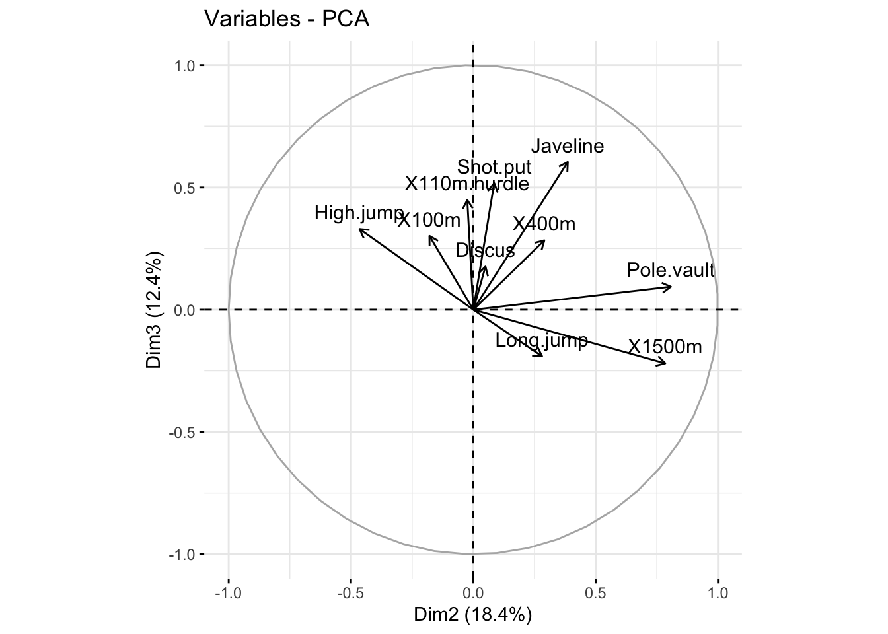
# Individuals on dimensions 2 and 3
fviz_pca_ind(res_pca, axes = c(2, 3))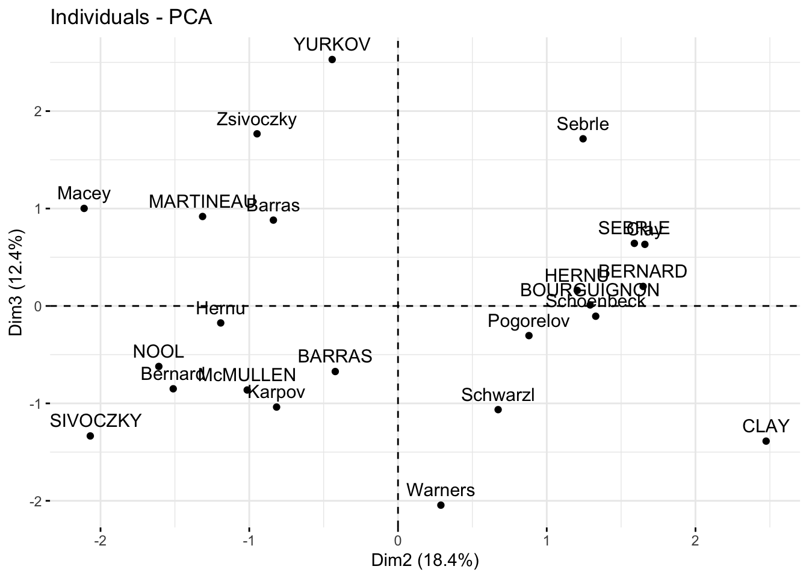